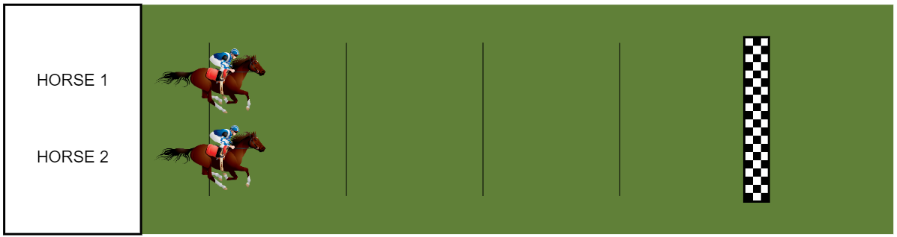
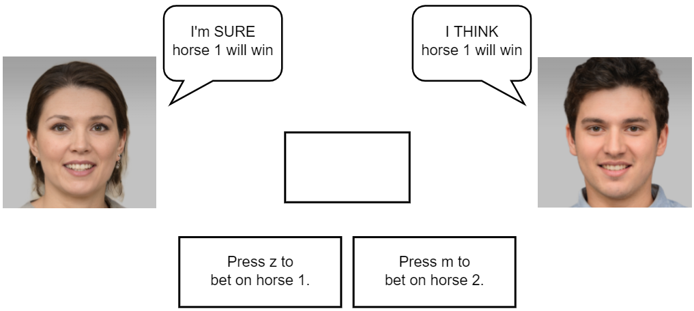

<!DOCTYPE html>
<html>

<head>
    <script src="jspsych-psychophysics-master/jspsych-dist/dist/jspsych.js"></script>
    <script src="jspsych-psychophysics-master/jspsych-dist/dist/plugin-html-button-response.js"></script>
    <script src="jspsych-psychophysics-master/jspsych-dist/dist/plugin-html-keyboard-response.js"></script>
    <script src="jspsych-psychophysics-master/jspsych-dist/dist/plugin-fullscreen.js"></script>
    <script src="jspsych-psychophysics-master/jspsych-dist/dist/plugin-preload.js"></script>
    <script src="jspsych-psychophysics-master/jspsych-dist/dist/plugin-instructions.js"></script>
    <script src="jspsych-psychophysics-master/jspsych-dist/dist/plugin-survey-likert.js"></script>
    <script src="jspsych-psychophysics-master/jspsych-dist/dist/plugin-external-html.js"></script>
    <script src="jspsych-psychophysics-master/jspsych-psychophysics.js"></script>
    <script src="jspsych-psychophysics-master/jspsych-dist/dist/plugin-call-function.js"></script>


    <script type="text/javascript" src="2022-03-27 HorseAnimation.js"></script>
    <script type="text/javascript" src="2022-03-27 TxtBoxes.js"></script>
    <script></script>

    <link rel="stylesheet" href="jspsych-psychophysics-master/jspsych-dist/dist/jspsych.css">
    </link>

</head>

<body></body>
<script>
    /*
10-21:  Created function to determine whether H1 or H2 wins
        Updated function to allow 2 uses to guess who wins with prob set by timeline variable
 
10-22:  Added instructions
        Reverted from jsPsych 7.0 to 6.3.1
        Added psychophysics plugin
        Added basic horse race stimulus
 
10-25:  Updated horse race stimulus

11-16:  Updated stimuli to scale with window size
11-16:  Replacing Keyboard input with buttons

02-16:  Updated from jsPsych  6.3.1 to 7.1
02-16:  Finalized horse race stimulus
02-16:  Added custom data output

03-28:  Updated horse race stimuli
        Added new advisor faces
        Added instructions page
*/

    //Sets up background color, date & ID for filename, and counterbalance condition
    //Note that const jsPsych = initJsPsych() is called in HoseAnimation.js
    document.body.style.backgroundColor = "grey";
    const date = new Date();
    var stDate = date.getMonth() + 1 + '-' + date.getDate();
    var subID = jsPsych.randomization.randomID(3);
    var cntBalance = ['l'];
    var fileName = cntBalance + '-' + stDate + '-' + subID


    //var keys = ['z', 'm'] original in TxtBoxes
    jsPsych.data.addProperties(
        {
            subject: subID,
            condition: cntBalance
        }
    )

    //Arrays for custom shortened data output. trialNum counter starts at 0
    var dataOut = {
        subID: [],
        trialNum: [],
        cntBalance: [],
        correct: [],
        rt: [],
        p1conf: [],
        p2conf: [],
        p1rslt: [],
        p2rslt: [],

    }
    var trlNum = 1

    /*This function generates timeline variable object with arguments for 
    hWinner: probability h1 wins
    conf1 & 2: probability advisor X expressed high confidence (0=low confidence, 1=high confidence)
    lo1 & 2: probability advisor is correct given they expressed low confidence (0=wrong, 1=correct)
    hi1 & 2: probability advisor is correct given they expressed high confidence (0=wrong, 1=correct)
    For each argument, a random number is generated and if it exceeds the argument,
    the value changes from 0 to 1
    advL/R corresponds to the text output for each advisor
    */

    var fullscreen_trial = {
        type: jsPsychFullscreen,
        fullscreen_mode: true
    };

    var preload = {
        type: jsPsychPreload,
        auto_preload: true
    };

    var startup = {
        timeline: [fullscreen_trial, preload]
    }

    var instructions = {
        type: jsPsychInstructions,
        pages: [
            '<div style= "font-size:20px;" <p> <strong> Welcome to the experiment! </strong><br> <p style="color:red; font-size:25px;"> Please do NOT exit full screen until you are done with the experiment. </p>' +
            '<p style="color:red;"> The experiment will be canceled and your data will be lost if you try to go back or refresh the page at any time during the experiment.</p>' +
            '<p style="color:red;"> Please rely on your memory and do NOT write anything down throughout the experiment. </p>' +
            '<br>' +
            '<p style="color:black;">Click next or use the arrow keys to proceed.</p> </span>'
            ,
            ' <br>' +
            'In this task, you will be a spectator to a series of horse races. Two horses, like those shown above, will race against each other. <br>' +
            'Predict which horse will win the race by pressing ' + keys[0] + ' if you think Horse 1 will win, or by pressing ' + keys[1] + ' if you think Horse 2 will win.'
            ,
            ' <br>' +
            'Before each race, you will see the predictions from two experts on horse racing. <br>' +
            'Each expert will tell you which of the two horses they think will win. They will also tell you how confident they are in their decision. <br>' +
            'For example, one expert might say "I THINK horse 1 will win," which expresses moderate confidence. <br>Another expert might say "I\'m SURE horse 1 will win," which expresses high confidence.<br>' +
            'Use their assessments to help you make a more accurate prediction. Try to correctly predict the outcome of as many races as you can.'
            ,
        ],
        on_start: function () {
            document.body.style.cursor = "default";
        },
        show_clickable_nav: true,
        show_page_number: true,
        on_finish: function () {
            document.body.style.cursor = 'none'
        }
    }

    function getTrial(hWinner, conf1, conf2, lo1, hi1, lo2, hi2) {
        var object = {
            advL: 'I THINK\nhorse ',
            advR: 'I THINK\nhorse ',
            data: {
                outcome: 1,
                p1conf: 0,
                p2conf: 0,
                p1rslt: 0,
                p2rslt: 0,
            }
        }

        if (Math.random() > hWinner) {
            object.data.outcome = 2
        }
        if (Math.random() < conf1) {
            object.data.p1conf = 1
        }

        if (Math.random() < conf2) {
            object.data.p2conf = 1
        }

        var horseRslt = [1, 2, 1]

        if (object.data.p1conf) {
            object.advL = "I'm SURE\nhorse "
            if (Math.random() < hi1) {
                object.data.p1rslt = 1
                object.advL += horseRslt[object.data.outcome - 1] + ' will win.'
                object.advLsltTxt = 'I won!'
            } else {
                object.advL += horseRslt[object.data.outcome] + ' will win.'
                object.advLsltTxt = 'I lost...'
            }
        } else {
            if (Math.random() < lo1) {
                object.data.p1rslt = 1
                object.advL += horseRslt[object.data.outcome - 1] + ' will win.'
                object.advLsltTxt = 'I won!'
            } else {
                object.advL += horseRslt[object.data.outcome] + ' will win.'
                object.advLsltTxt = 'I lost...'
            }
        }

        if (object.data.p2conf) {
            object.advR = "I'm SURE\nhorse "
            if (Math.random() < hi2) {
                object.data.p2rslt = 1
                object.advR += horseRslt[object.data.outcome - 1] + ' will win.'
                object.advRsltTxt = 'I won!'

            } else {
                object.advR += horseRslt[object.data.outcome] + ' will win.'
                object.advRsltTxt = 'I lost...'
            }
        } else {
            if (Math.random() < lo2) {
                object.data.p2rslt = 1
                object.advR += horseRslt[object.data.outcome - 1] + ' will win.'
                object.advRsltTxt = 'I won!'
            } else {
                object.advR += horseRslt[object.data.outcome] + ' will win.'
                object.advRsltTxt = 'I lost...'
            }
        }
        return object
    }

    //generate timeline array. Change i < x determines number of trials
    //hWinner, conf1, conf2, lo1, hi1, lo2, hi2
    var timelineArr = []
    for (let i = 0; i < 10; i++) {
        timelineArr.push(getTrial(.5, .5, .5, .7, .7, .6, .8))
    }

    /*checks data from two trials ago to see if correct==true.
    If true, displays Win screen, else skips to lose screen
    */
    var winScrn = {
        timeline: [{
            type: jsPsychPsychophysics,
            data: jsPsych.timelineVariable('data'),
            stimuli: rsltScreenWin,
            choices: 'NO_KEYS',
            canvas_width: wd,
            canvas_height: ht,
            trial_duration: 1,
        }],
        conditional_function: function (data) {
            if (jsPsych.data.get().last(2).values()[0].correct == true) {   //.last(2)
                return true
            } else {
                return false
            }
        }
    }
    /*checks data from three trials ago to see if correct==false or null.
    If true, displays lose screen, else skips screen
    */
    var loseScrn = {
        timeline: [{
            type: jsPsychPsychophysics,
            data: jsPsych.timelineVariable('data'),
            stimuli: rsltScreenLose,
            choices: 'NO_KEYS',
            canvas_width: wd,
            canvas_height: ht,
            trial_duration: 1
        }],
        conditional_function: function (data) {
            if (jsPsych.data.get().last(3).values()[0].correct == false ||
                jsPsych.data.get().last(3).values()[0].correct == null) {
                return true
            } else {
                return false
            }
        }
    }

    /*
    Break counters
    */
    var brkCounter = 0
    var brkCounterEnd = 0
    function restPeriod(countDwn) {
        return '<p>The experiment will resume in ' + countDwn + ' seconds. '
    }
    var restArr = []
    for (let i = 30; i > 0; i--) {
        restArr.push(
            {
                stimulus: restPeriod(i)
            }
        )
    }

    var brkfdbk = {
        type: jsPsychHtmlKeyboardResponse,
        stimulus: function () {
            var accFdbk = jsPsych.data.get().filter({ correct: true }).count() /
                dataOut.trialNum[dataOut.trialNum.length - 1] * 100
            return '<p>You have finished block ' + brkCounterEnd + ' of 4.' +
                '<p>You correctly predicted ' + Math.round(accFdbk) + '% of the races.' +
                '<p>On the next screen, you will be given a 30 second break. Press the <b>g</b> key to start your break.'
        },
        choices: ['g'],
        trial_duration: 1,
        on_finish: function () {
            dataOut.subID.push('brk')
            dataOut.trialNum.push('brk')
            dataOut.cntBalance.push('brk')
            dataOut.rt.push('brk')
            dataOut.correct.push('brk')
            dataOut.p1conf.push('brk')
            dataOut.p2conf.push('brk')
            dataOut.p1rslt.push('brk')
            dataOut.p2rslt.push('brk')
        }
    }

    var brkcntDwn = {
        type: jsPsychHtmlKeyboardResponse,
        stimulus: jsPsych.timelineVariable('stimulus'),
        choices: ['p'],
        trial_duration: 1,
        timeline: restArr,
        on_finish: function (data) {
            if (jsPsych.pluginAPI.compareKeys(data.response, 'p')) {
                jsPsych.endCurrentTimeline();
            }
        },
    }

    //Set brkCounter == X to the number of trials per block. Set brkCounterEnd < Y to the number of blocks per experiment.
    var brk = {
        timeline: [
            brkfdbk,
            brkcntDwn,

        ],
        conditional_function: function () {
            if (brkCounter == 100 && brkCounterEnd < 3) { //TESTTESTTEST ORIGNINAL BRKCOUNTER == X
                brkCounterEnd++
                brkCounter = 0
                return true
            } else {
                return false
            }
        }
    }

    /*
    Presents raceStart with text set according to timelineVariable
    Waits for response, checks if response matches data.ouotcome
    Sets data.correct to true if id matches
    Presents h1 or h2 animation according to data.outcome
    presents win or lose screen
    */

    var trial = {
        timeline: [
            {
                type: jsPsychPsychophysics,
                stimuli: raceStart,
                response_start_time: strtTime,
                choices: [keys[0], keys[1]],
                canvas_width: wd,
                canvas_height: ht,
                data: jsPsych.timelineVariable('data'),
                ///trial_duration: 1,
                on_finish: function (data) {
                    data.correct = null
                    if (data.response == null) {
                        data.correct = null
                    } else if (data.outcome == 1 && data.response == keys[0] ||
                        data.outcome == 2 && data.response == keys[1]) {
                        data.correct = true
                    } else {
                        data.correct = false
                    }

                    //data.winner = data.outcome
                    dataOut.subID.push(data.subject)
                    dataOut.trialNum.push(trlNum)
                    trlNum++
                    dataOut.cntBalance.push(data.condition)
                    dataOut.rt.push(data.rt)
                    dataOut.correct.push(data.correct)
                    dataOut.p1conf.push(data.p1conf)
                    dataOut.p2conf.push(data.p2conf)
                    dataOut.p1rslt.push(data.p1rslt)
                    dataOut.p2rslt.push(data.p2rslt)
                    brkCounter++
                }
            }, {
                type: jsPsychPsychophysics,
                stimuli: function (data) {
                    if (jsPsych.data.get().last(1).values()[0].outcome == 1) {
                        return h1
                    } else {
                        return h2
                    }
                },
                choices: 'NO_KEYS',
                data: jsPsych.timelineVariable('data'),
                trial_duration: 1,
                canvas_width: wd,
                canvas_height: ht,
            },
            winScrn,
            loseScrn,
            brk,
        ],
        timeline_variables: timelineArr
    }

    //functions to prepare and save data onto server
    function prepdata(data) {
        var datacsv = "";
        var labels = Object.keys(data); //grabs all the properties of data

        for (n = 0; n < labels.length; n++) {
            datacsv = datacsv + labels[n] + ','; // 'col1', 'col2'
        }
        datacsv = datacsv + '\n'; //next line

        let ntoloop = data[Object.keys(data)[0]].length;
        for (n = 0; n < ntoloop; n++) {
            for (var i in data) {
                if (data.hasOwnProperty(i)) {
                    datacsv = datacsv + data[i][n] + ','; //in "str" + num, num is converted to a string.
                }
            }
            datacsv = datacsv + '\n';
        }

        return datacsv;
    }

    function saveData(name, data) {
        var xhr = new XMLHttpRequest();
        xhr.open('POST', 'write_data.php'); // 'write_data.php' is the path to the php file
        xhr.setRequestHeader('Content-Type', 'application/json');
        xhr.send(JSON.stringify({ filename: name, filedata: data }));
    }

    var scale = ["Definitely Left", "Probably Left", "Neutral", "Probably Right", "Definitely Right"];

    debrief = {
        timeline: [
            {
                type: jsPsychSurveyLikert,
                questions: [
                    {
                        prompt: '  <br>' +
                            '<p>In this study, you saw predictions from two experts. Which expert do you think was more accurate?'
                        , name: 'Advisor accuracy', labels: scale, required: true
                    },
                    { prompt: "Which expert would you trust more?", name: 'trust', labels: scale, required: true }
                ],
                on_finish: function (data) {
                    saveData(fileName, prepdata(dataOut))
                    saveData(fileName + '-full', jsPsych.data.get().csv())
                }
            }, {
                type: jsPsychExternalHtml,
                url: 'Debrief.html',
            }
        ]


    }
    //instructions
    jsPsych.run([startup, instructions, trial, debrief])

</script>

</html>